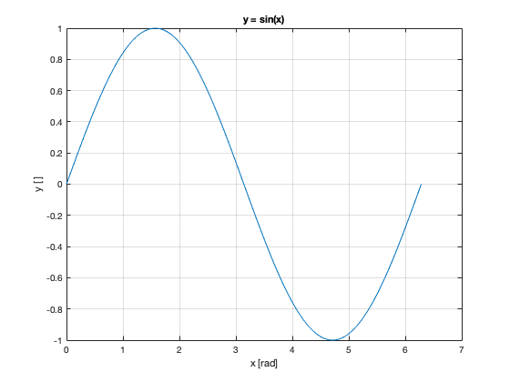

Week 1 Exercise 4 - Kailer Driscoll
Contents
(a)
x = linspace(0, 2*pi)
x =
Columns 1 through 7
0 0.0635 0.1269 0.1904 0.2539 0.3173 0.3808
Columns 8 through 14
0.4443 0.5077 0.5712 0.6347 0.6981 0.7616 0.8251
Columns 15 through 21
0.8885 0.9520 1.0155 1.0789 1.1424 1.2059 1.2693
Columns 22 through 28
1.3328 1.3963 1.4597 1.5232 1.5867 1.6501 1.7136
Columns 29 through 35
1.7771 1.8405 1.9040 1.9675 2.0309 2.0944 2.1579
Columns 36 through 42
2.2213 2.2848 2.3483 2.4117 2.4752 2.5387 2.6021
Columns 43 through 49
2.6656 2.7291 2.7925 2.8560 2.9195 2.9829 3.0464
Columns 50 through 56
3.1099 3.1733 3.2368 3.3003 3.3637 3.4272 3.4907
Columns 57 through 63
3.5541 3.6176 3.6811 3.7445 3.8080 3.8715 3.9349
Columns 64 through 70
3.9984 4.0619 4.1253 4.1888 4.2523 4.3157 4.3792
Columns 71 through 77
4.4427 4.5061 4.5696 4.6331 4.6965 4.7600 4.8235
Columns 78 through 84
4.8869 4.9504 5.0139 5.0773 5.1408 5.2043 5.2677
Columns 85 through 91
5.3312 5.3947 5.4581 5.5216 5.5851 5.6485 5.7120
Columns 92 through 98
5.7755 5.8389 5.9024 5.9659 6.0293 6.0928 6.1563
Columns 99 through 100
6.2197 6.2832
(b)
y = sin(x);
(c)
plot(x,y);
grid on;
title("y = sin(x)");
xlabel("x [rad]");
ylabel("y [ ]");
